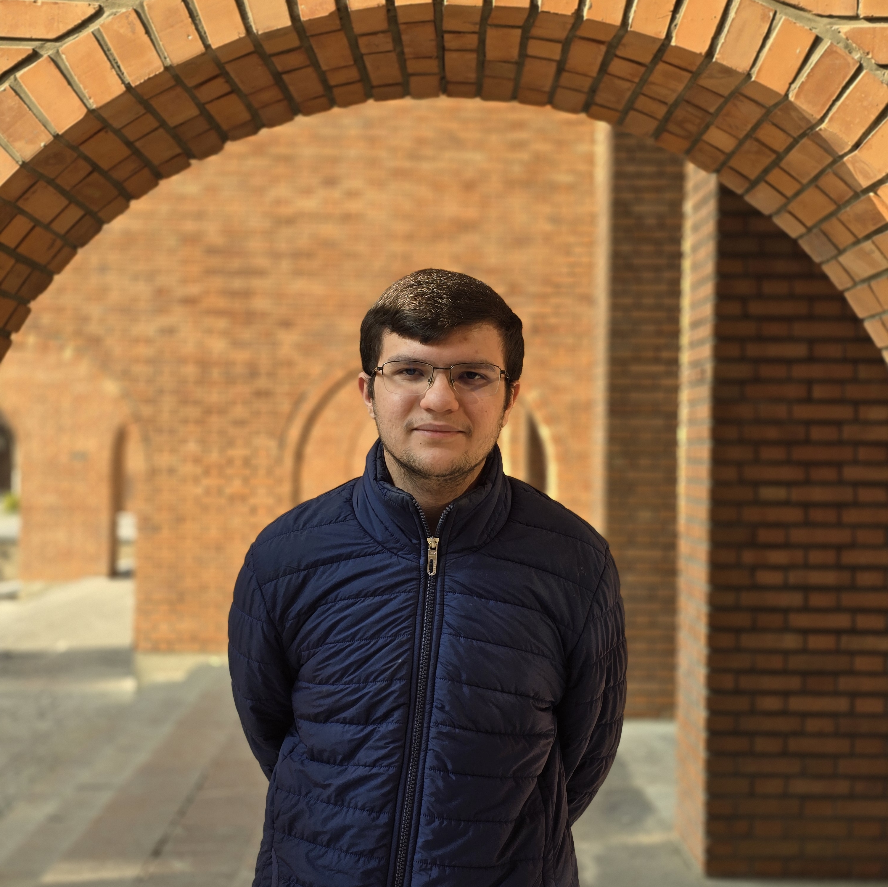

I am an undergraduate student in Computer Engineering at Sharif University of Technology, expected to graduate in 2027. I am fortunate to be working with Prof. Masoud Seddighin and Prof. MohammadTaghi Hajiaghayi.
I have a broad interest in Theoretical Computer Science, especially in Graph Algorithms, Complexity Theory, and Algorithmic Game Theory.
Email: akaviani05 [at] gmail [dot] com